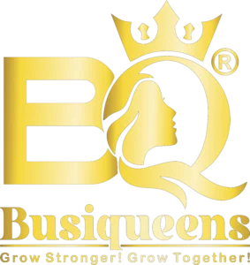

Developed and optimized Busiqueens into a structured, scalable platform through website development, technical SEO audits, and ongoing SEO strategies focused on visibility, performance, and long-term organic growth.
Website Architecture
Crawl & Indexation
SEO Optimization
Organic Visibility
A women-focused business support platform designed to empower entrepreneurs with structured website development, technical SEO, and long-term growth strategies.
Busy Queens
Business Support & Community Platform
Women Entrepreneurship & Small Business Support
Women entrepreneurs working from home
Website Development, SEO Audit, Technical SEO, Ongoing SEO Consulting
Busiqueens is a platform created to support and empower women entrepreneurs running small businesses from home. The goal of the platform is to provide visibility, structure, and a professional online presence for women-led businesses operating at an early or local stage.
The project involved both website development and SEO, with a strong focus on building a solid technical and structural foundation that supports long-term growth rather than short-term visibility.
SEO work on this platform is ongoing, with continuous improvements being implemented as the website evolves and scales.
At the beginning of the project, several foundational and structural challenges were identified that needed to be resolved before sustainable growth could be achieved.
A detailed SEO audit was conducted alongside the website development to ensure that SEO was integrated from the very beginning, rather than being treated as a later-stage optimization process.
This approach ensured that both technical structure and content strategy were aligned with search engine requirements, forming a strong foundation for long-term organic growth.
Based on the audit findings, a structured approach was implemented combining website development and SEO to create a strong, scalable foundation for long-term growth.
Based on the work implemented so far, the platform has seen foundational improvements in structure, technical SEO, and content alignment.
Website structure is now organized, scalable, and optimized for search engines.
Technical SEO setup has been improved to support long-term performance.
Crawl efficiency and index readiness have significantly improved.
Content is now aligned with user intent and audience requirements.
The website is now positioned for gradual and sustainable organic growth.
This project highlights important SEO principles focused on building strong foundations, improving structure, and enabling long-term growth.
Building SEO into the website during development saves significant time, effort, and rework in later stages.
Addressing technical and structural issues early creates strong long-term advantages for scalability and performance.
Clear alignment with user intent is essential, especially for niche and community-focused platforms.
SEO for purpose-driven platforms requires patience, continuous refinement, and consistent effort over time.
This project highlights the importance of foundational SEO, structured execution, and strategic planning for new and growing platforms.
SEO work for Busiqueens is actively ongoing, focused on improving visibility, expanding content, and supporting long-term platform growth.
This case study reflects real, ongoing SEO work — focused on transparency, continuous improvement, and sustainable growth, rather than exaggerated results.
SEO results vary based on competition, implementation, and time. This case study is shared to demonstrate real-world SEO processes, website development decisions, and ongoing optimization efforts rather than guaranteed outcomes.